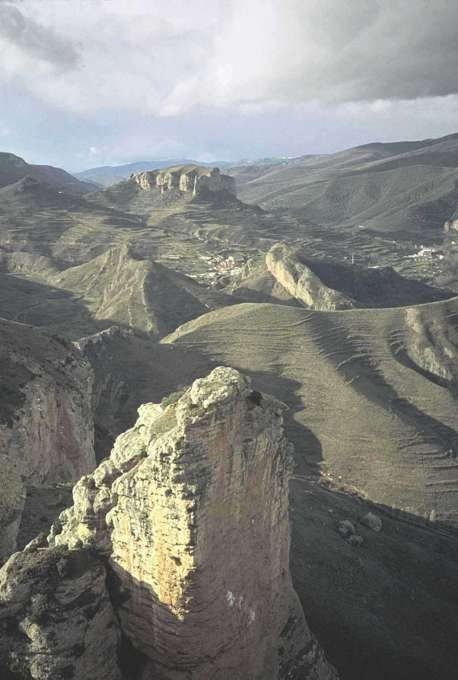
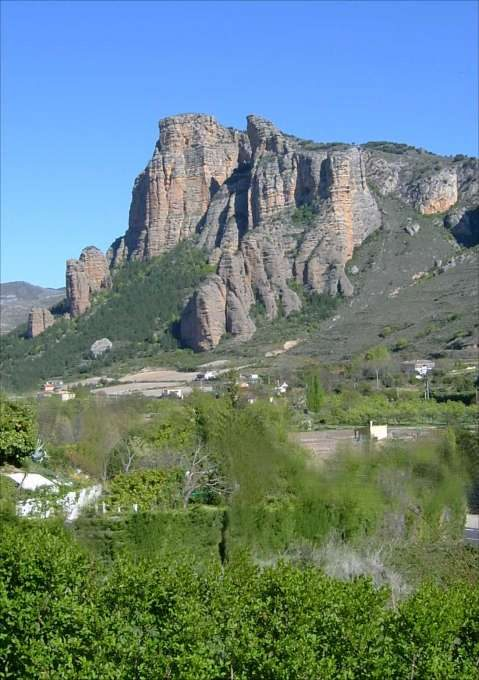

Peña Bajenza
Islallana · comarca del Iregua
- Distancia4,6 kmida y vuelta
- Desnivel375 m
- Tiempo orientativo2 h
- Dificultadmedia-alta
- Época recomendadatodo el año
- Terrenocamino y senda
El ascenso hasta esta peña seguramente nos hará sentir eufóricos; fatigados, pero eufóricos. Eso sí, deberemos tener cuidado de que al llegar arriba la emoción no nos nuble la vista y nos haga dar dos pasos de más, o que una inocente tos, seguida de un traspiés nos lleve a tener que comenzar de nuevo la ascensión desde abajo. Las palabras difícilmente pueden transmitir la sensación de verticalidad y de “tener el mundo a nuestros pies” que percibimos desde la cima de esta peña. Y para aquellos de vosotros que tengáis vértigo; bueno, pues hay otros muchos “Lugares con encanto”.
{kind=link}

{kind=link}

Recorrido
Partimos desde Islallana. Si miramos hacia el Río Iregua Peña Bajenza se eleva justo frente a nosotros, así que aprovecharemos la referencia visual para acercarnos hasta el su pie utilizando un camino asfaltado que cruza el río. Tras llegar al cruce con el camino asfaltado que aparece en amarillo en el mapa nuestro camino cambia el asfalto por la tierra y empieza a ascender sin piedad.
Poco más arriba, en una pequeña loma donde hay instalada una cruz, el camino finaliza. Remontamos un talud y tomamos un sendero muy evidente que nos acercará a “las espaldas” de Peña Bajenza. Sobra decir que la fuerte pendiente se mantiene. Pasamos junto a un par de casetas de conducción de agua y en una pequeña planicie debemos hacer un brusco giro hacia la derecha para encarar la última parte del ascenso.
Entramos en una zona colonizada por pequeños pinos y el sendero vuelve a empinarse. Terminamos la ascensión, continuamos andando en la misma dirección y, de repente, nos damos cuenta que no tenemos lugar donde apoyar el siguiente paso; vamos, que estamos al borde de la nada. Obviamente regresaremos a Islallana desandando nuestros pasos.